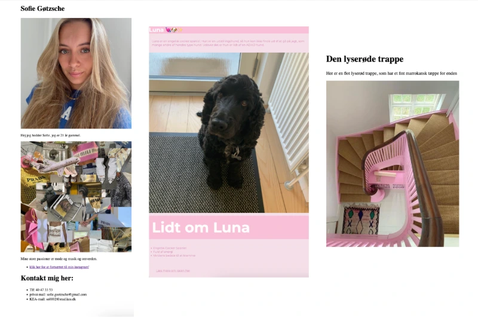
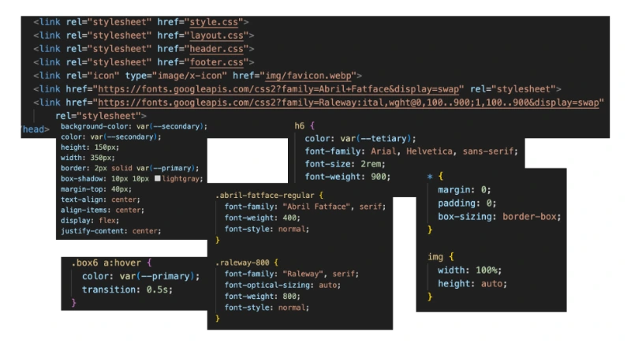
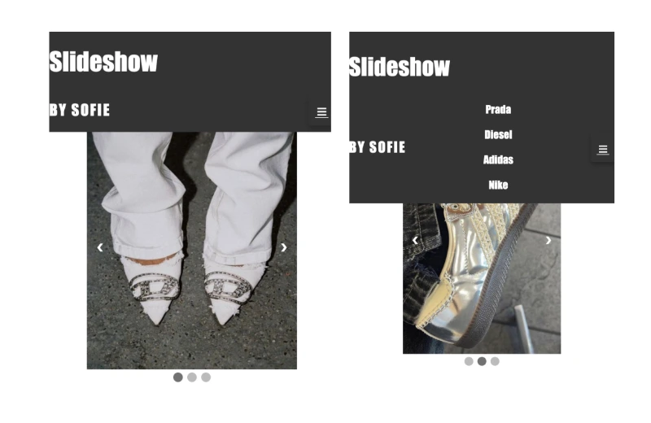
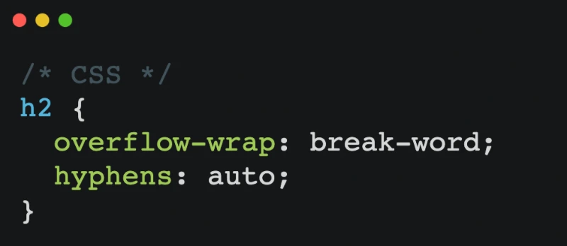
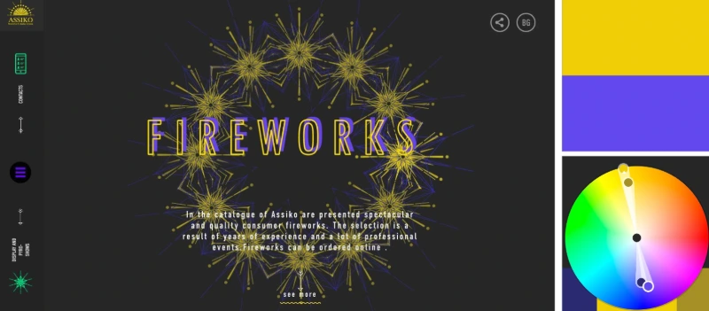
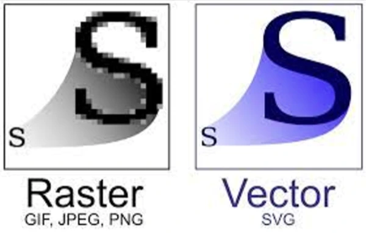
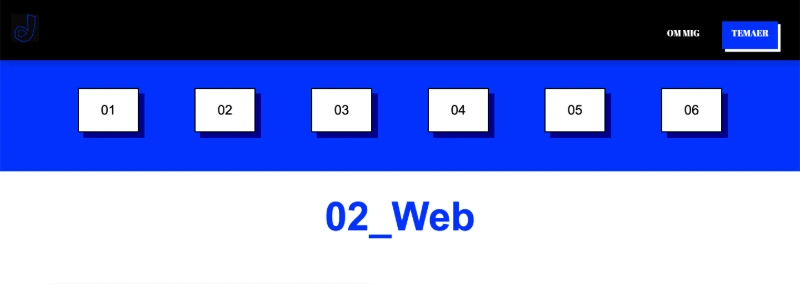
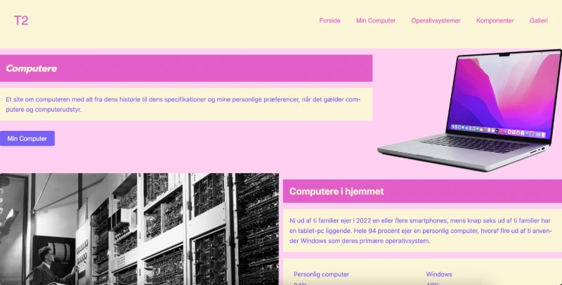
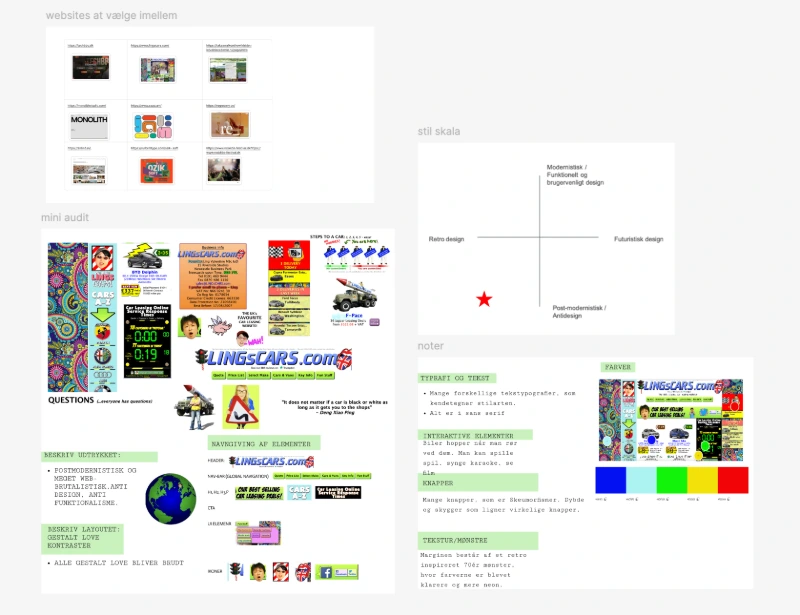

Intro til HTML og CSS
Vi har ifbm. introduktionen til HTML lavet "visitkort" hjemmesider af os selv. Vi har også lavet
kæledyrsøvelsen og en lille test som kan ses på billedet. Vi har lært hvordan et HTML opstilles i
HTML & BODY (header, main, footer). Vi lært om de mest almene tags som tekstkoder (p,h1,h2 osv.),
typografi(font), colors, padding, margin mfl. Vi har uploadet vores site til Filezilla og lært at
lave
mappestruktur og navigere i den på Filezille og pc'en. Vi har også valideret sitet på forskellige
måder, man kan både sætte url ind på en side og teste det eller downloade Extentions i VS Code som
kan hjælpe med at validere siden. Vi har også lært at browseren kan reagere forskelligt på det man
koder.
Vi har oprettet os på FreeCodeCamp og lavet øvelser, som hjælper til en start når man skal afprøve
det at kode.

CSS og Fonte
Vi har lært man skal link til sit stylesheet i head af HTML'en. Vi har lært om declarations,
selectorer, semikoloner, hover, id'er og flere syntakser.
Vi har lært til om Google Web fonts, som er gratis fonts, du ikke behøver at hente ned til dit site,
men kan linke til i HTML'er og indsætte embed code i css'en.

Chat GPT
Vi har også brugt CHAT GPT, til at hjælpe os med at lave forskellige ting i CSS og Javascript, som
eksemplet her på billedet af et slideshow der kører med forskellige billeder. Udover det en menu og
en burger menu.

Tekstombrydning
Vi har lært om teksombrydning ( text-wrap og hyphens i css og &-shy-; ). Udover det har vi fået
kendskab til Webfont, font-squirrel og fontjoy, som hjælper med at finde fonte og sammensætte fonte
så de passer sammen.

Designprincipper
Vi har lært om Format. Det vi sidder og laver er Webdesign og responsivt design, der er ikke faste
størrelser og enheder. Vi har lært om grid, som giver faste linjer og grids anatomi som - rækker,
moduler og kolonner. Man kan dog også bryde gridstruktuen. Vi fik introduktion til Wireframes.
Dernæst blev vi kendt med Gestalt lovene som er det visuelle hiearki. Det afhænger lidt af hvem man
spørger hvor mange gestalt love der er, men dem vi har lært om er procimity / nærhed, similarity /
lighed, good continuation / kontinuitet, common region / lukkethed og clusure / figurdannelse.
Vi har lært om det visuelle hierarki, kontraster i størrelser, positions og farver.
Vi har lært lidt om komlementær-kontraster, HEX-koder, Adobe Colorwheel og kvalitets-kontrast

Billedfilformater og størrelser
Vi har lært om typer filer som jpg, png, svg og webp. Webp er det vi at blevet henvist til at bruger
på vores websites, som gøre det hurtigere for sider at indlæse og filen er mindre en andre sm jpg og
png. Vi har lært at med svg'er beholder vektorgrafikken sin kvalitet, ved ændring af størrelse.

Flex grids
Vi har lært om display flex, flex-direction, rows og columns og flere. Det er særligt nyttigt til
brug i menu'er.

Website - Studiestarsprøven
Vi har i løbet af hele temaet bygget vores Website til studiestartsprøven hvor (næsten) alt det vi
har lært skulle indkorporeres. På websitet har vi både arbejdet i Mobile og Desktop og efter
Mobile-first. På websitet er der bla. også arbejdet med typografier, sektioner, lighed og farver
efter gestaltlovene.

Værkstedsuge
I Værkstedsugen har vi lært mere om Wireframes. Vi har fået viden inden for Metadata,
brugsrettigheder, hvordan man bruger codepen og henter løsninger derfra, Git og Burgermenu.
Vi har også fået introduktion til 4 stile - Modernisme, Post-modernisme, Retro-design og Futurisme.
Fx er dette website modernistisk med et funktionelt design, simpler former, farver, skrift med høj
læsbarhed, orden struktur og brug af grids.
Vi har analyseret websites, og diskuteret hvilke stilarter de lå op af. Vi har fået kendsska til
Neomorphism - Soft UI, Flat Design og om Brutalistisme og udtrykket som eksempelvis kunne være
Harmoisk, Dynamisk, Statisk eller Kaotisk.
Vi har også lært om ting som farvekontraster, gråtoneværdi, serif, sans serif og skriftfamilier.